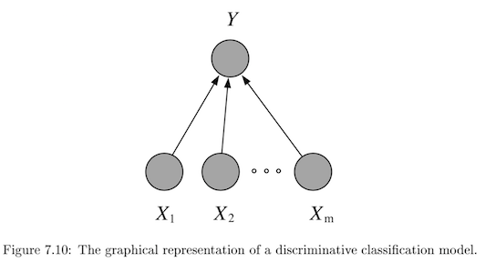
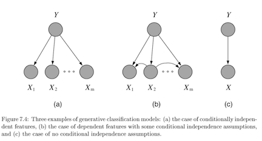
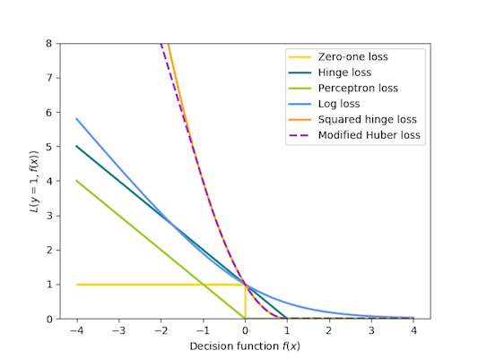
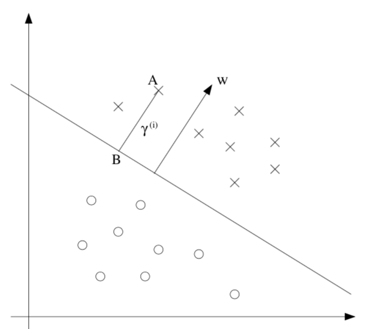

classification
view markdownoverview
- regressor doesn’t classify well
- even in binary case, outliers skew fit
- asymptotic classifier - assumes infinite data
- linear classifer $\implies$ boundaries are hyperplanes
- discriminative - model $P(Y\vert X)$ directly

- usually lower bias $\implies$smaller asymptotic error
- slow convergence ~ $O(p)$
- generative - model $P(X, Y) = P(X\vert Y) P(Y)$

- usually higher bias $\implies$ can handle missing data
- this is because we assume some underlying X
- fast convergence ~ $O[\log(p)]$
- usually higher bias $\implies$ can handle missing data
- decision theory - models don’t require finding $p(y|x)$ at all
binary classification
- $\hat{y} = \text{sign}(\theta^T x)$
- usually $\theta^Tx$ includes b term, but generally we don’t want to regularize b
| Model | $\mathbf{\hat{\theta}}$ objective (minimize) |
|---|---|
| Perceptron | $\sum_i \max(0, -y_i \cdot \theta^T x_i)$ |
| Linear SVM | $\theta^T\theta + C \sum_i \max(0,1-y_i \cdot \theta^T x_i)$ |
| Logistic regression | $\theta^T\theta + C \sum_i \log[1+\exp(-y_i \cdot \theta^T x_i)]$ |
- svm, perceptron use +1/-1, logistic use 1/0
- perceptron - tries to find separating hyperplane
- whenever misclassified, update w
- can add in delta term to maximize margin

multiclass classification
- reducing multiclass (K categories) to binary
- one-against-all
- train K binary classifiers
- class i = positive otherwise negative
- take max of predictions
- one-vs-one = all-vs-all
- train $C(K, 2)$ binary classifiers
- labels are class i and class j
- inference - any class can get up to k-1 votes, must decide how to break ties
- flaws - learning only optimizes local correctness
- one-against-all
- single classifier - one hot vector encoding
- multiclass perceptron (Kesler)
- if label=i, want $\theta_i ^Tx > \theta_j^T x \quad \forall j$
- if not, update $\theta_i$ and $\theta_j$* accordingly
- kessler construction
- $\theta = [\theta_1 … \theta_k] $
- want $\theta_i^T x > \theta_j^T x \quad \forall j$
- rewrite $\theta^T \phi (x,i) > \theta^T \phi (x,j) \quad \forall j$
- here $\phi (x, i)$ puts x in the ith spot and zeros elsewhere
- $\phi$ is often used for feature representation
- define margin: $\Delta (y,y’) = \begin{cases} \delta& if : y \neq y’ \ 0& if : y=y’\end{cases}$
- check if $y=\text{argmax}_{y’} \theta^T \phi(x,y’) + \delta (y,y’)$
- multiclass SVMs (Crammer & Singer)
- minimize total norm of weights s.t. true label score is at least 1 more than second best label
- multinomial logistic regression = multi-class log-linear model (softmax on outputs)
- we control the peakedness of this by dividing by stddev
- multiclass perceptron (Kesler)
discriminative
logistic regression
-
$p(Y=1 x, \theta) = \text{logistic}(\theta^Tx)$ - assume Y ~ $\text{Bernoulli}(p)$ with $p=\text{logistic}(\theta^Tx$)
- can solve this online with GD of likelihood
- better to solve with iteratively reweighted least squares
- $Logit(p) = \log[p / (1-p)] = \theta^Tx$
- multiway logistic classification
-
assume $P(Y^k=1 x, \theta) = \frac{e^{\theta_k^Tx}}{\sum_i e^{\theta_i^Tx}}$, just as arises from class-conditional exponential family distributions
-
- logistic weight change represents change in odds
- fitting requires penalty on weights, otherwise they might not converge (i.e. go to infinity)
binary models
- probit (binary) regression
-
$p(Y=1 x, \theta) = \phi(\theta^Tx)$ where $\phi$ is the Gaussian CDF - pretty similar to logistic
-
- noise-OR (binary) model
- consider $Y = X_1 \lor X_2 \lor … X_m$ where each has a probability of failing
- define $\theta$ to be the failure probabilities
-
$p(Y=1 x, \theta) = 1-e^{-\theta^Tx}$
- other (binary) exponential models
-
$p(Y=1 x, \theta) = 1-e^{-\theta^Tx}$ but x doesn’t have to be binary -
complementary log-log model: $p(Y=1 x, \theta) = 1-\text{exp}[e^{-\theta^Tx}]$
-
decision trees / rfs - R&N 18.3; HTF 9.2.1-9.2.3
- importance scores
- dataset-level
- for all splits where the feature was used, measure how much variance reduced (either summed or averaged over splits)
- the sum of importances is scaled to 1
- prediction-level: go through the splits and add up the changes (one change per each split) for each features
- note: this bakes in interactions of other variables
- ours: only apply rules based on this variable (all else constant)
- why not perturbation based?
- trees group things, which can be nice
- trees are unstsable
- dataset-level
- follow rules: predict based on prob distr. of points in same leaf you end up in
- inductive bias
- prefer small trees
- prefer tres with high IG near root
- good for certain types of problems
- instances are attribute-value pairs
- target function has discrete output values
- disjunctive descriptions may be required
- training data may have errors
- training data may have missing attributes
- greedy - use statistical test to figure out which attribute is best
- split on this attribute then repeat
- growing algorithm
- information gain - decrease in entropy
- weight resulting branches by their probs
- biased towards attributes with many values
- use GainRatio = Gain/SplitInformation
- can incorporate SplitInformation - discourages selection of attributes with many uniformly distributed values
- sometimes SplitInformation is very low (when almost all attributes are in one category)
- might want to filter using Gain then use GainRatio
- regression tree
- must decide when to stop splitting and start applying linear regression
- must minimize SSE
- information gain - decrease in entropy
- can get stuck in local optima
- avoid overfitting
- don’t grow too deep
- early stopping doesn’t see combinations of useful attributes
- overfit then prune - proven more succesful
- reduced-error pruning - prune only if doesn’t decrease error on validation set
- $\chi^2$ pruning - test if each split is statistically significant with $\chi^2$ test
- rule post-pruning = cost-complexity pruning
- infer the decision tree from the training set, growing the tree until the training data is fit as well as possible and allowing overfitting to occur.
- convert the learned tree into an equivalent set of rules by creating one rule for each path from the root node to a leaf node.
- these rules are easier to work with, have no structure
- prune (generalize) each rule by removing any preconditions that result in improving its estimated accuracy.
- sort the pruned rules by their estimated accuracy, and consider them in this sequence when classifying subsequent instances.
- incorporating continuous-valued attributes
- choose candidate thresholds which separate examples that differ in their target classification
- just evaluate them all
- missing values
- could just fill in most common value
- also could assign values probabilistically
- differing costs
- can bias the tree to favor low-cost attributes
- ex. divide gain by the cost of the attribute
- can bias the tree to favor low-cost attributes
- high variance - instability - small changes in data yield changes to tree
- many trees
- bagging = bootstrap aggregation - an ensemble method
- bootstrap - resampling with replacement
- training multiple models by randomly drawing new training data
- bootstrap with replacement can keep the sampling size the same as the original size
- random forest - for each split of each tree, choose from only m of the p possible features
- smaller m decorrelates trees, reduces variance
- RF with m=p $\implies$ bagging
- voting
- consensus: take the majority vote
- average: take average of distribution of votes
- reduces variance, better for improving more variable (unstable) models
- adaboost - weight models based on their performance
- bagging = bootstrap aggregation - an ensemble method
- optimal classification trees - simultaneously optimize all splits, not one at a time
svms
- svm benefits
- maximum margin separator generalizes well
- kernel trick makes it very nonlinear
- nonparametric - can retain training examples, although often get rid of many
- at test time, can’t just store w - have to store support vectors

- $\hat{y} =\begin{cases} 1 &\text{if } w^Tx +b \geq 0 \ -1 &\text{otherwise}\end{cases}$
- $\hat{\theta} = \text{argmin} :\frac{1}{2} \vert \vert \theta\vert \vert ^2 \s.t. : y^{(i)}(\theta^Tx^{(i)}+b)\geq1, i = 1,…,m$
- functional margin $\gamma^{(i)} = y^{(i)} (\theta^T x +b)$
- limit the size of $(\theta, b)$ so we can’t arbitrarily increase functional margin
- function margin $\hat{\gamma}$ is smallest functional margin in a training set
- geometric margin = functional margin / $\vert \vert \theta \vert \vert $
- if $\vert \vert \theta \vert \vert =1$, then same as functional margin
- invariant to scaling of w
- derived from maximizing margin: \(\max \: \gamma \\\: s.t. \: y^{(i)} (\theta^T x^{(i)} + b) \geq \gamma, i=1,..,m\\ \vert \vert \theta\vert \vert =1\)
- difficult to solve, especially because of $\vert \vert w\vert \vert =1$ constraint
- assume $\hat{\gamma}=1$ ~ just a scaling factor
- now we are maximizing $1/\vert \vert w\vert \vert $
- functional margin $\gamma^{(i)} = y^{(i)} (\theta^T x +b)$
- soft margin classifier - lets examples fall on wrong side of decision boundary
- assigns them penalty proportional to distance required to move them back to correct side
-
min $\frac{1}{2} \theta ^2 \textcolor{blue}{ + C \sum_i^n \epsilon_i} \s.t. y^{(i)} (\theta^T x^{(i)} + b) \geq 1 \textcolor{blue}{- \epsilon_i}, i=1:m \ \textcolor{blue}{\epsilon_i \geq0, 1:m}$ - large C can lead to overfitting
- benefits
- number of parameters remains the same (and most are set to 0)
- we only care about support vectors
- maximizing margin is like regularization: reduces overfitting
- actually solve dual formulation (which only requires calculating dot product) - QP
- replace dot product $x_j \cdot x_k$ with kernel function $K(x_j, x_k)$, that computes dot product in expanded feature space
- linear $K(x,z) = x^Tz$
- polynomial $K (x, z) = (1+x^Tz)^d$
- radial basis kernel $K (x, z) = \exp(-r\vert \vert x-z\vert \vert ^2)$
- transforming then computing is O($m^2$), but this is just $O(m)$
- practical guide
- use m numbers to represent categorical features
- scale before applying
- fill in missing values
- start with RBF
- valid kernel: kernel matrix is Psd
decision rules
- if-thens, rule can contain ands
- good rules have large support and high accuracy (they tradeoff)
- decision list is ordered, decision set is not (requires way to resolve rules)
- most common rules: Gini - classification, variance - regression
- ways to learn rules
- oneR - learn from a single feature
- sequential covering - iteratively learn rules and then remove data points which are covered
- ex rule could be learn decision tree and only take purest node
- bayesian rule lists - use pre-mined frequent patterns
- generally more interpretable than trees, but doesn’t work well for regression
- features often have to be categorical
- rulefit
- learns a sparse linear model with the original features and also a number of new features that are decision rules
- train trees and extract rules from them - these become features in a sparse linear model
- feature importance becomes a little stickier….
generative
gaussian class-conditioned classifiers
-
binary case: posterior probability $p(Y=1 x, \theta)$ is a sigmoid $\frac{1}{1+e^{-z}}$ where $z = \beta^Tx+\gamma$ - multiclass extends to softmax function: $\frac{e^{\beta_k^Tx}}{\sum_i e^{\beta_i^Tx}}$ - $\beta$s can be used for dim reduction
- probabilistic interpretation
- assumes classes are distributed as different Gaussians
- it turns out this yields posterior probability in the form of sigmoids / softmax
- only a linear classifier when covariance matrices are the same (LDA)
- otherwise a quadratic classifier (like QDA) - decision boundary is quadratic
- MLE for estimates are pretty intuitive
- decision boundary are points satisfying $P(C_i\vert X) = P(C_j\vert X)$
- regularized discriminant analysis - shrink the separate covariance matrices towards a common matrix
- $\Sigma_k = \alpha \Sigma_k + (1-\alpha) \Sigma$
- parameter estimation: treat each feature attribute and class label as random variables
- assume distributions for these
- for 1D Gaussian, just set mean and var to sample mean and sample var
- can use directions for dimensionality reduction (class-separation)
naive bayes classifier
- assume multinomial Y
-
with clever tricks, can produce $P(Y^i=1 x, \eta)$ again as a softmax - let $y_1,…y_l$ be the classes of Y
- want Posterior $P(Y\vert X) = \frac{P(X\vert Y)(P(Y)}{P(X)}$
- MAP rule - maximum a posterior rule
- use prior P(Y)
- given x, predict $\hat{y}=\text{argmax}_y P(y\vert X_1,…,X_p)=\text{argmax}_y P(X_1,…,X_p\vert y) P(y)$
- generally ignore constant denominator
- naive assumption - assume that all input attributes are conditionally independent given y
- $P(X_1,…,X_p\vert Y) = P(X_1\vert Y)\cdot…\cdot P(X_p\vert Y) = \prod_i P(X_i\vert Y)$
- learning
- learn L distributions $P(y_1),P(y_2),…,P(y_l)$
- for i in 1:$\vert Y \vert$
- learn $P(X \vert y_i)$
- for discrete case we store $P(X_j\vert y_i)$, otherwise we assume a prob. distr. form
- naive: $\vert Y\vert \cdot (\vert X_1\vert + \vert X_2\vert + … + \vert X_p\vert )$ distributions
- otherwise: $\vert Y\vert \cdot (\vert X_1\vert \cdot \vert X_2\vert \cdot … \cdot \vert X_p\vert )$
- smoothing - used to fill in 0s
- $P(x_i\vert y_j) = \frac{N(x_i, y_j) +1}{N(y_j)+\vert X_i\vert }$
- then, $\sum_i P(x_i\vert y_j) = 1$
exponential family class-conditioned classifiers
- includes Gaussian, binomial, Poisson, gamma, Dirichlet
-
$p(x \eta) = \text{exp}[\eta^Tx - a(\eta)] h(x)$ - for classification, anything from exponential family will result in posterior probability that is logistic function of a linear function of x
text classification
- bag of words - represent text as a vector of word frequencies X
- remove stopwords, stemming, collapsing multiple - NLTK package in python
- assumes word order isn’t important
- can store n-grams
- multivariate Bernoulli: $P(X\vert Y)=P(w_1=true,w_2=false,…\vert Y)$
- multivariate Binomial: $P(X\vert Y)=P(w_1=n_1,w_2=n_2,…\vert Y)$
- this is inherently naive
- time complexity
- training O(n*average_doc_length_train+$\vert c\vert \vert dict\vert $)
- testing O($\vert Y\vert $ average_doc_length_test)
- implementation
- have symbol for unknown words
- underflow prevention - take logs of all probabilities so we don’t get 0
- $y = \text{argmax }log :P(y) + \sum_i log : P(X_i\vert y)$
instance-based (nearest neighbors) - really discriminative
- also called lazy learners = nonparametric models
- make Voronoi diagrams
- can take majority vote of neighbors or weight them by distance
- distance can be Euclidean, cosine, or other
- should scale attributes so large-valued features don’t dominate
- Mahalanobois distance metric accounts for covariance between neighbors
- in higher dimensions, distances tend to be much farther, worse extrapolation
- sometimes need to use invariant metrics
- ex. rotate digits to find the most similar angle before computing pixel difference
- could just augment data, but can be infeasible
- computationally costly so we can approximate the curve these rotations make in pixel space with the invariant tangent line
- stores this line for each point and then find distance as the distance between these lines
- ex. rotate digits to find the most similar angle before computing pixel difference
- finding NN with k-d (k-dimensional) tree
- balanced binary tree over data with arbitrary dimensions
- each level splits in one dimension
- might have to search both branches of tree if close to split
- finding NN with locality-sensitive hashing
- approximate
- make multiple hash tables
- each uses random subset of bit-string dimensions to project onto a line
- union candidate points from all hash tables and actually check their distances
- comparisons
- error rate of 1 NN is never more than twice that of Bayes error
likelihood calcs
single Bernoulli
-
$L(p) = P$[Train Bernoulli(p)]= $P(X_1,…,X_n\vert p)=\prod_i P(X_i\vert p)=\prod_i p^{X_i} (1-p)^{1-X_i}$ - $=p^x (1-p)^{n-x}$ where x = $\sum x_i$
- $\log[L(p)] = \log[p^x (1-p)^{n-x}]=x \log(p) + (n-x) \log(1-p)$
- $0=\frac{dL(p)}{dp} = \frac{x}{p} - \frac{n-x}{1-p} = \frac{x-xp - np+xp}{p(1-p)}=x-np$
- $\implies \hat{p} = \frac{x}{n}$
multinomial
- $L(\theta) = P(x_1,…,x_n\vert \theta_1,…,\theta_p) = \prod_i^n P(d_i\vert \theta_1,…\theta_p)=\prod_i^n factorials \cdot \theta_1^{x_1},…,\theta_p^{x_p}$- ignore factorials because they are always same
- require $\sum \theta_i = 1$
- $\implies \theta_i = \frac{\sum_{j=1}^n x_{ij}}{N}$ where N is total number of words in all docs
boosting
- adaboost
- freund & schapire
- reweight data points based on errs of previous weak learners, then train new classifiers
- classify as an ensemble
- gradient boosting
- leo breiman
- actually fits the residual errors made by the previous predictors
- newer algorithms for gradient boosting (speed / approximations)
- xgboost (2014 - popularized around 2016)
- implementation of gradient boosted decision trees designed for speed and performance
- things like caching, etc.
- light gbm (2017)
- can get gradient of each point wrt to loss - this is like importance for point (like weights in adaboost)
- when picking split, filter out unimportant points
- can get gradient of each point wrt to loss - this is like importance for point (like weights in adaboost)
- Catboost (2017)
- xgboost (2014 - popularized around 2016)
-
boosting with different cost function ($y \in {-1, 1}$, or for $L_2$Boost, also $y \in \mathbb R$)
Adaboost LogitBoost $L_2$Boost $\exp(y\hat{y})$ $\log_2 (1 + \exp(-2y \hat y ))$ $(y - \hat y)^2 / 2$